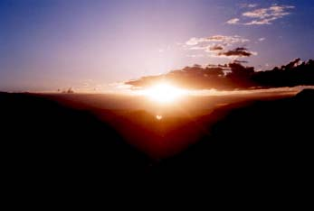
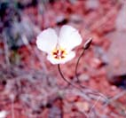

セドナ日記 〜 第４日目 98.5.7
エアポートメサから見る夕日III
 最後の夕日もやっぱり、エアポートメサで見ることにした。しかし、この日は、日が沈んでからも、月明りで岩山を眺めることにした。連日の豪華なディナーは、お休みにし、コーヒーショップで軽く早めの夕食をとっておいた。
駐車場に車をとめ、何度も登った、エアポートメサの岩を登る。頂上まで５分とかからない小さな岩山だ。頂上の平らの部分に腰掛ける。最後の夕日も、やはり、昨日とは違う、今日だけの夕日だった。確実に地球は回っている。昨日の夕日から、ちょうど１回転が終わり、次の１回転がまた始まる。地球が産まれてから、もう何回回転したのだろうか？40億年×365回くらいになるのだろうけど、想像できる数字ではない。でもその１回ごとに、やはりセドナの地で夕日を見ることができたのだろうか？
セドナは約２億年前から浸食が始まってできた、地形という。少なくとも、この２億年間は、地上にあったわけだ。曇りの日が多かったとしても、過去２億年のうち、１／４だけ、夕日が見れたとしても、２億×365÷4=182億5000万回になる。182億回である。しかしこれは、僕らが今日見ている夕日自体が、少なくとも182億種類ある夕日のうちの１つに遭遇したことになる。その日に、僕が産まれていて、成人していて、かつセドナを旅行し、かつエアポートメサに登らなければ、この夕日にはあえなかったのだ。なんと、深遠なる世界だろうか？ちょっと、妄想ぎみになりながら、セドナ最後の夕日を楽しんだ。 日が沈むと、急激に冷え出す。５月にセドナで夕日の後も外にいるなら、ジャンパーのたぐいは持っていたほうが賢明である。僕らはもちろん準備良く携帯していた。いつも夕日を見ている場所から、少し移動して、ベルロックとカシドラルロックが一度に眺めることができる場所に移動する。満月に近かったこの日は、日が沈むと、月明りが増し、夜道も難無く歩くことができた。セドナの街明りがきれいに見える。小さな街である。つつましいという表現が似合う街明りだ。そして、僕らは、ベルロックとカシドラルロックを眺められる、場所を見つけ、そこに座って、月と岩山を眺めることにした。
UFOでも来ないかなあと思ったが、そうそう会えるものではないらしい。しかし、月明りに照らされた、ベルロックなどは、UFOそのものに見えなくもない。月明りで、岩山が青く光っているような気がした。
静けさが充満した、青い月明りのしたで、岩山を眺める。ただ、見て、感じているだけのとても贅沢な時間だった。きっと、その場にいることそのものが奇跡なのだろう。